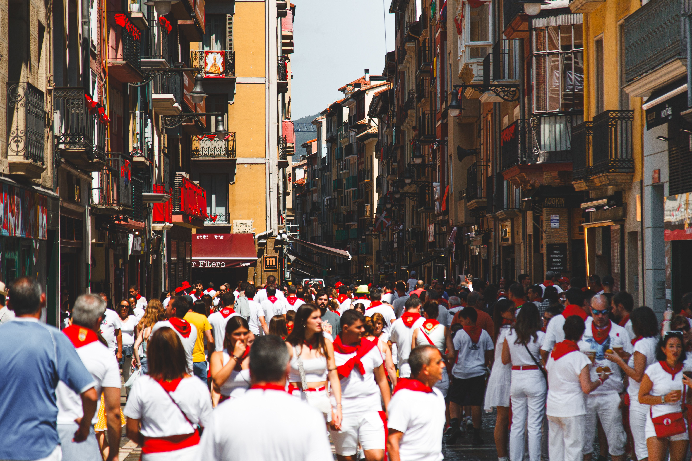
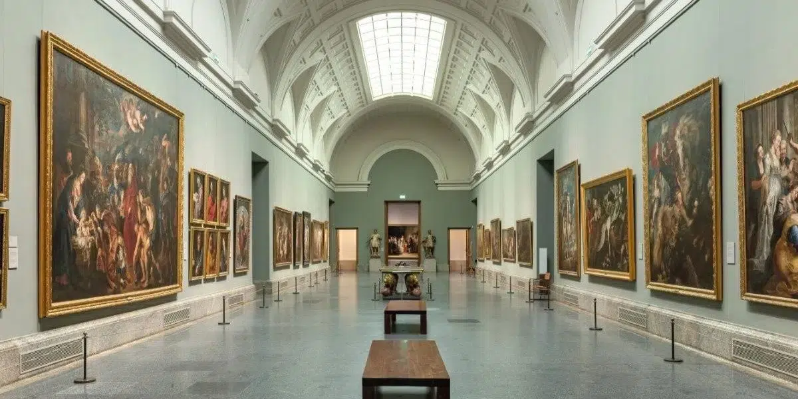

Calles con historia, sabores únicos y una energía incomparable. Madrid te espera.
EXPLORA
Desde el palacio real hasta los museos de fama mundial.
Tapas, mercados tradicionales y estrellas Michelin.
Te ayudamos en lo que necesites
NO TE PIERDAS NADA
Ver todos los eventos

La celebración más tradicional de Madrid, con conciertos, verbenas, ferias y actividades típicas que llenan la ciudad de música y cultura.

Una muestra temporal inédita que reúne obras maestras del renacimiento europeo.
Uno de los festivales más importantes de Europa que celebra la diversidad en las calles de Chueca.